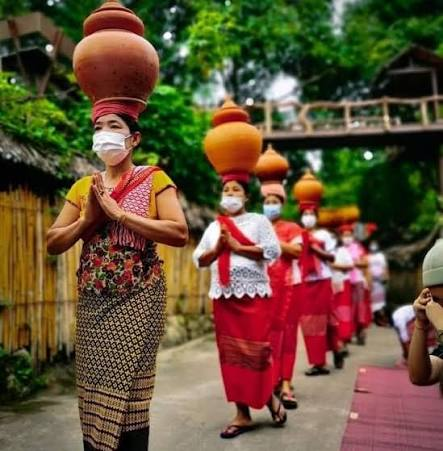

มอญราชบุรี

ชาวไทยเชื้อสายมอญในจังหวัดราชบุรี เป็นหนึ่งในกลุ่มชาติพันธุ์เก่าแก่และมีความสำคัญยิ่งทางประวัติศาสตร์ โดยส่วนใหญ่อพยพเข้ามาตั้งถิ่นฐานในประเทศไทยมาตั้งแต่สมัยกรุงศรีอยุธยา กรุงธนบุรี จนถึงช่วงต้นกรุงรัตนโกสินทร์ เพื่อหลบหนีภัยสงครามและการกดขี่จากพม่าในอดีต บรรพบุรุษชาวมอญมักเดินทางเข้ามาตามช่องทางธรรมชาติผ่านเทือกเขาตะนาวศรี เช่น ช่องทางด่านเจดีย์สามองค์ หรือด่านบ้องตี้ และได้รับพระมหากรุณาธิคุณจากพระมหากษัตริย์ไทยโปรดเกล้าฯ ให้ตั้งบ้านเรือนอยู่ริมแม่น้ำสายหลักเพื่อทำมาหากินและช่วยเป็นหูเป็นตาในชายแดน โดยในจังหวัดราชบุรี ชุมชนมอญที่เก่าแก่และหนาแน่นที่สุดตั้งรกรากอยู่ริมสองฝั่งแม่น้ำแม่กลอง แถบอำเภอโพธาราม (เช่น ตำบลบ้านสิงห์ ตำบลบ้านเลือก) และอำเภอเมืองราชบุรี (เช่น ตำบลนครชุมน์ ตำบลคุ้งน้ำวน)